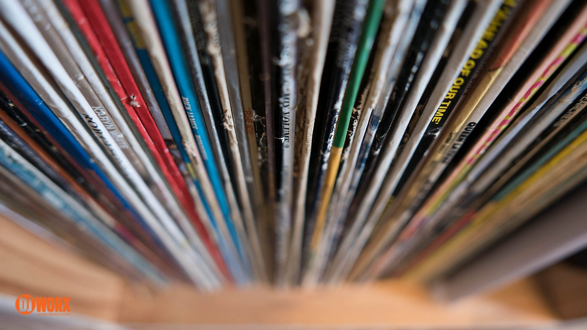

<!--toolbar with buttons linked to other components. Added image to give color scheme and make it look less empty-->

<mat-toolbar class="mainToolbar">
  <mat-toolbar-row>
    <span class="title">
      Vinyl Warehouse
    </span>
  </mat-toolbar-row>
  <mat-toolbar-row>
    <button mat-button [routerLink]="['/viewAllRecords']">View All Records  <mat-icon>all_inbox</mat-icon></button>
    <button mat-button [routerLink]="['/addRecord']">Add Record  <mat-icon>note_add</mat-icon></button>
    <button mat-button [routerLink]="['/search-records']">Search Records  <mat-icon>search</mat-icon></button>
  </mat-toolbar-row>
</mat-toolbar>

<div class="content">

</div>


<router-outlet></router-outlet>
